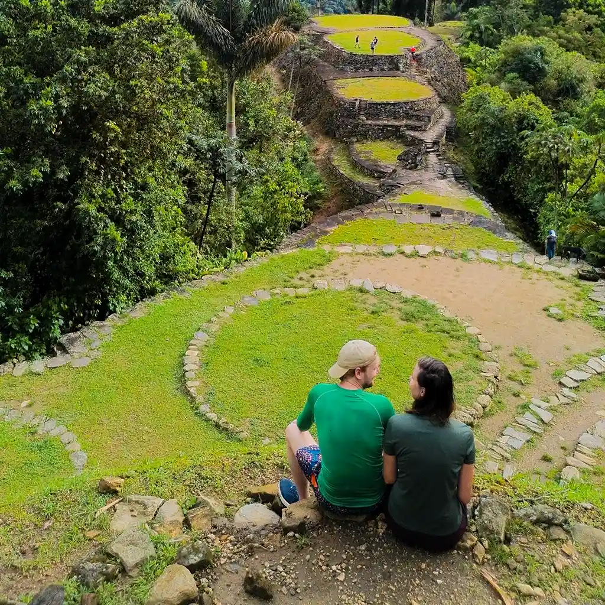
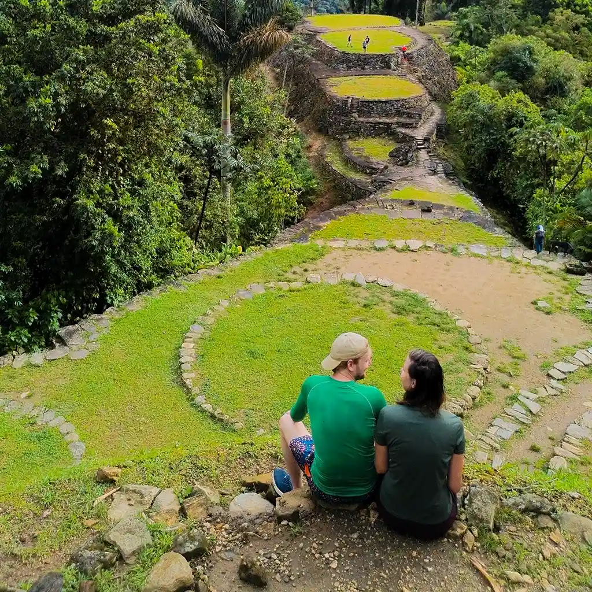

What To Do
Ciudad Perdida:
-
If you hike to Ciudad Perdida, you will discover ancient ruins.
You could also take a guided tour to learn more about the indigenous cultures.
-
If you travel during the dry season, you will enjoy better weather for the hike.
You must bring plenty of water, as the trails can be quite demanding.
-
If you visit the Lost City, you will have the chance to see rare wildlife.
You should wear appropriate footwear for the rugged terrain.
-
If you are interested in history, you should visit Ciudad Perdida.
You can explore the archaeological sites and learn about the ancient Tayrona civilization.
Cabo de la Vela:
-
If you go to Cabo de la Vela, you will experience breathtaking sunsets.
You could try taking a boat ride to get a different view of the coast.
-
If you camp at Cabo de la Vela, you will be able to enjoy the desert landscape at night.
You should bring a tent and sleeping bag, as it can get cold after sunset.
-
If you want to enjoy the beach, you should visit Cabo de la Vela.
You can relax by the clear waters or try water sports like kitesurfing.
-
If you explore the Wayuu culture, you will learn about their customs and traditions.
You must try the local food, especially the fish dishes.
Home